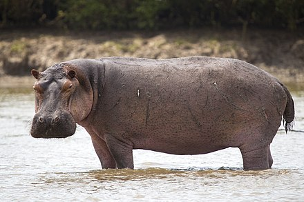

The hippo is one of the largest mammals on Earth! Their name hippopotamus comes from the greek word meaning "water horse" or "river horse." Hippos are most commonly active at night when they forage for food, they are herbivores so they mostly eat grass. They are also great swimmers regardless of their size, they can even hold their breath for up to 5 minutes!
